Coach found nothing to fix. Out of the ten games he reviewed, yours was the only one with no correction. Your knight tour got the biggest cheer in the whole video:
Before
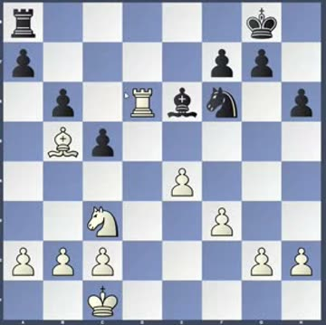
17.Bc6The move
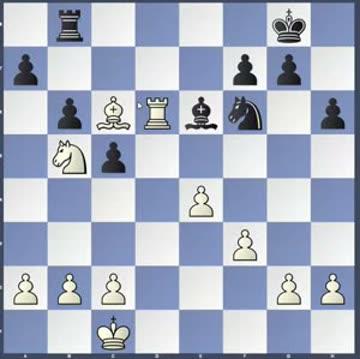
18.Nb5 — “哇，真是一步好棋!”After
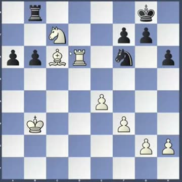
19.Nc7 — the fork lands
Next step: keep playing the Scotch. Now learn what to do when Black replies properly — 4…Nf6, 4…Bc5 or 4…Qf6. That's the real test.
📋 Six things Coach wants you to practise
1Don't give away the centre
When they push a pawn at you, don't just take it — develop a piece instead. Whoever ends up with pawns in the middle is better.
“吃到之后，你的中心给对手。”
Once you capture, you give your opponent the centre.
📅 22 Aug 2026 · game review, 11:11
Before
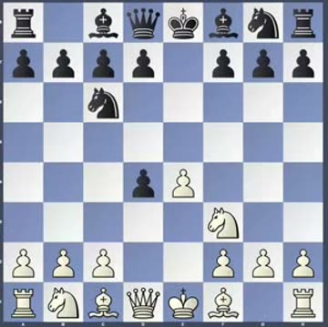
3…exd4 — the pawn is offeredThe choice
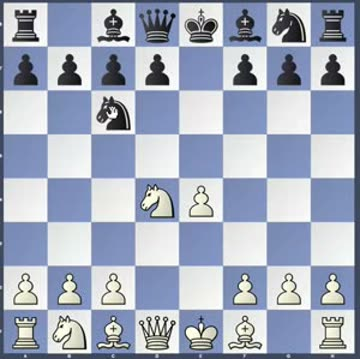
4.Nxd4 — Black must not takeAfter
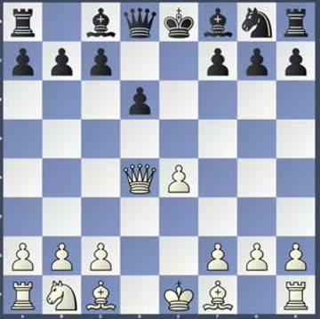
4…Nxd4 5.Qxd4 — White owns it
This happened in your own game — and it's why you won. Your opponent took, and handed you the whole middle.
2Before you push a pawn, check your pieces are safe
One glance. This is the cheapest habit on the list and it saves whole games.
“我们小朋友在冲兵之前，一定要注意你的子有没有受到危险。”
Kids, before you push a pawn, always check whether your pieces are in any danger.
📅 22 Aug 2026 · game review, 25:07
Before
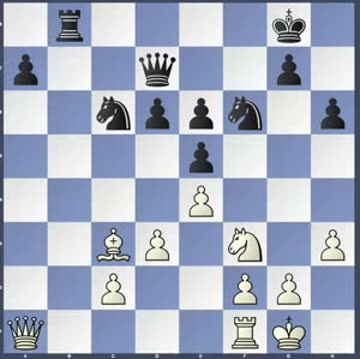
Quiet — everything defendedThe push
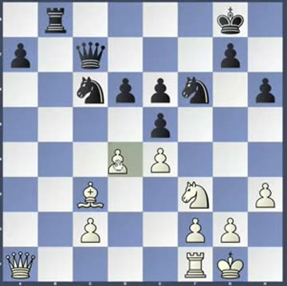
d4 pushed (green square)After
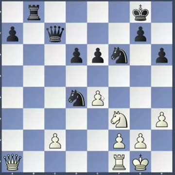
After the trades — a weak pawn
3If you sacrifice, work out what happens when they don't take
Everyone calculates the capture. The line where they refuse is where the surprises live.
“要注意对方不吃的变化，你要把它算进去。”
Watch out for the line where your opponent declines — you have to include it in your calculation.
📅 24 Aug 2025 · class, 02:39
Before
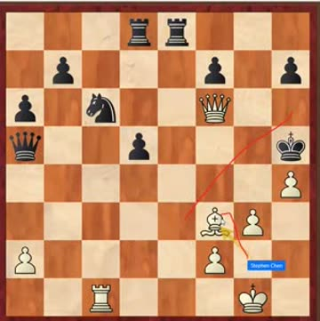
The puzzle — White to playThe sacrifice
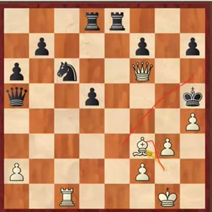
The offer (Coach's red arrow)After
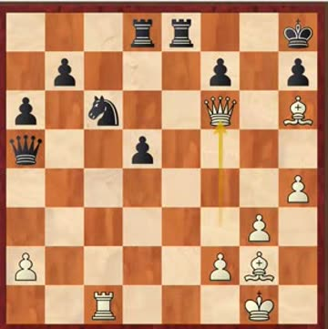
…and the finish
Coach's biggest theme this term: the queen sacrifice — “国际象棋里只有一个棋子不能牺牲 —— 王” (every piece can be sacrificed except the king).
4Drill skewers
The one tactic Coach named out loud as a weakness in the group. Learn to spot the shape: king in front, big piece behind, same line.
“两个小朋友对于这个 Skewer 这个战术都需要再加强一些。”
Both kids need to strengthen skewer tactics.
📅 22 Aug 2026 · game review, 19:49
Before
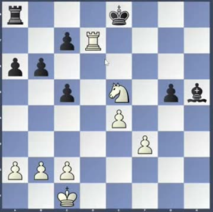
Rook on the 7thSet up
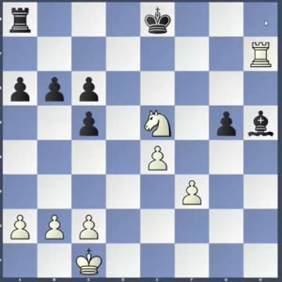
Rh7 — lining it upThe idea
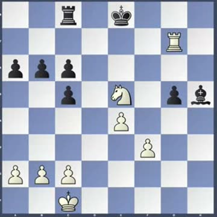
Rh8+ next — and the rook falls
5Never trade just because you can
Especially when you're winning — every trade dissolves a bit of your advantage. Have a reason.
“为什么要换呢？不要换。”
Why trade? Don't trade.
📅 22 Aug 2026 · game review, 08:29
Before
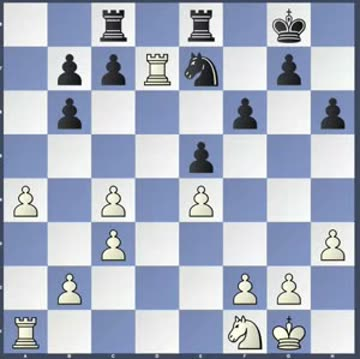
Rooks nose to nose, White winningThe trade
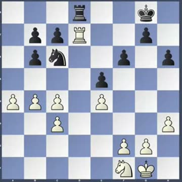
Traded — for no reasonAfter
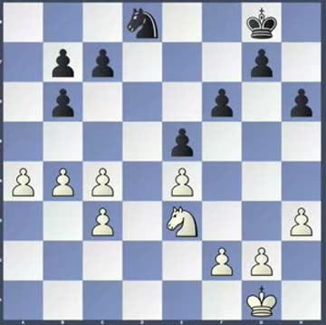
Simplified — the grip is gone
You already got this right! At 15.Rhd1 you kept the rooks on to hold the open file — exactly what Coach wanted: “不换，不主动换，因为我要战线”.
6In the endgame, march your king up and make a passed pawn
The king is a fighting piece once the queens are gone. And when it's simply winning, Coach says just push: “无脑冲兵就可以”.
“把你的王走上 … 无脑冲兵就可以。”
Bring your king up … then just push the pawn, no thinking needed.
📅 22 Aug 2026 · game review, 21:23
Before
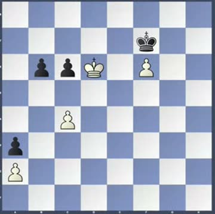
King marches upPush
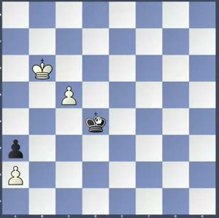
Pawn goes forwardAfter
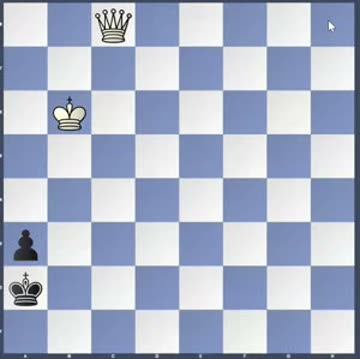
New queen! 👑
Bonus — bishop beats knight. A bishop can waste a move; a knight cannot. That's how you squeeze: “象有等招，马没有等招”.
“象有等招，马没有等招。”
The bishop has waiting moves; the knight does not.
📅 24 Aug 2025 · class, 34:49
Before
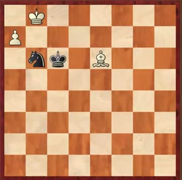
Bishop vs knight, pawn on a7Squeeze
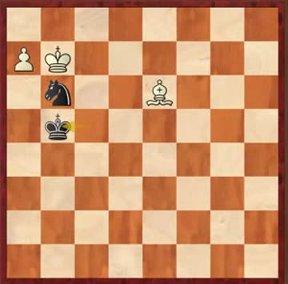
Black is running out of movesThe trick
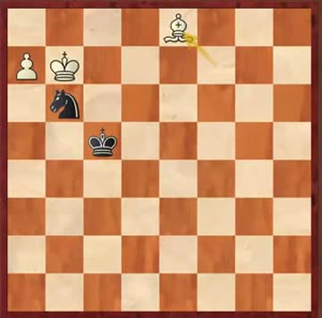
Bishop just waits — zugzwang
📝 Homework
“这九道题远远不够，你要自己加料。”
These nine problems are nowhere near enough — you have to add your own.
📅 11 Aug 2025 · orientation, and repeated since
Do extra on Chess.com Puzzles in untimed mode — no clock, no rushing. Coach also likes a 3-minute Puzzle Battle against your opponent right before your game as a warm-up: “热身完了之后，你的下棋的质量可能会更好一点”.
Remember the deadline: the week's game has to be played by Thursday, or Coach Dong has no time to review it.